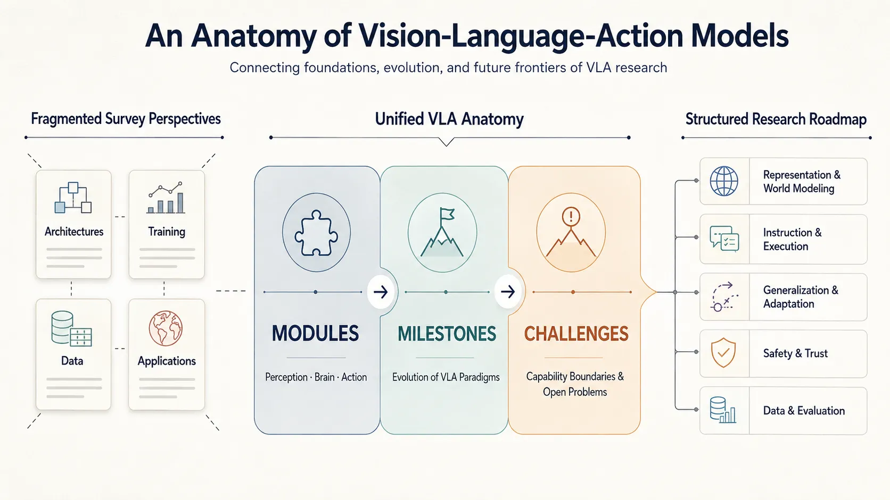
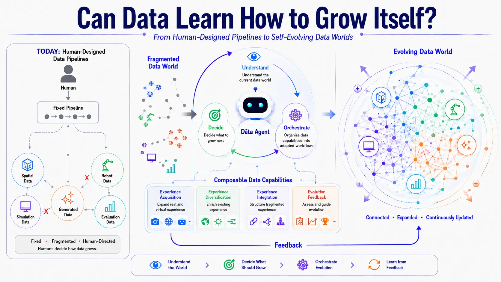
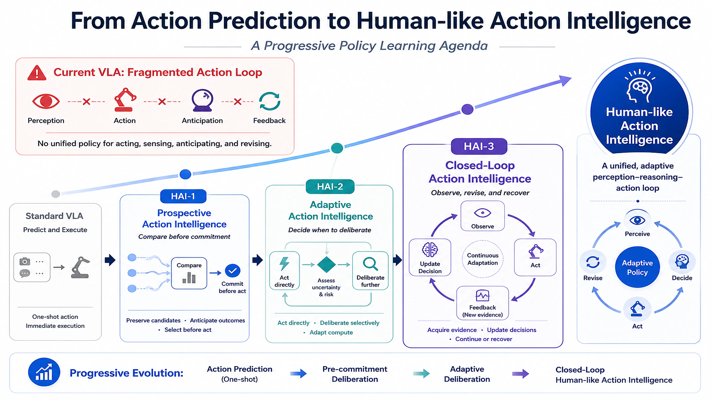

A growing research atlas.
Built topic by topic.
研究版图围绕 VLA 能力体系、数据基础设施、具身认知评测与策略学习展开， 并延伸至人类中心视觉系统，尝试连接多模态理解、知识形成、决策与真实行动。
RESEARCH FIGURE / UNIFIED SURVEY ANATOMY

MODULES → MILESTONES → CHALLENGESVISION–LANGUAGE–ACTION / 研究主题 01
An Anatomy of Vision-Language-Action Models
From Modules to Milestones and Challenges
将快速扩张且彼此割裂的 VLA 文献，组织为能够解释能力构成、技术演进与未来边界的统一知识框架。
- RESEARCH FOCUS
- CORE IDEA
- Modules → Milestones → Challenges
RESEARCH FIGURE / SELF-EVOLVING DATA WORLD

DATA AGENT · WORLD FEEDBACK · CONTINUOUS EVOLUTION数据引擎 / 研究主题 02
Can Data Learn How to Grow Itself?
From human-designed pipelines to self-evolving data worlds.
探索数据基础设施能否理解自身状态、识别增长缺口，并通过反馈持续组织下一轮数据演化。
- RESEARCH FOCUS
- CORE IDEA
- Data Agent + World Feedback
FINE-GRAINED BENCH / 研究主题 03
Fine-Grained Bench
Representative Work · CFG-Bench / ECCV 2026
让具身评测从“识别发生了什么”进一步走向理解物理交互、时序因果、行为意图与执行质量。
- RESEARCH FOCUS
- CORE IDEA
- 4 Abilities · 11 Diagnostic Tasks
HAI SERIES / PROGRESSIVE POLICY LEARNING

EMBODIED POLICY LEARNING / 研究主题 04
Policy Learning for Embodied Agents
Turning multimodal understanding into reliable action.
以 HAI-1、HAI-2、HAI-3 三项前后递进的研究，推动 VLA 从动作预测走向 Human-like Action Intelligence。
- RESEARCH FOCUS
- SERIES
- Deliberate → Adapt → Close the Loop
HUMAN-CENTRIC VISION / PORTRAIT SYSTEM PREVIEW
HUMAN-CENTRIC VISUAL INTELLIGENCE / 研究主题 05
Visual Perception & Generative Portrait Systems
From visual quality signals to reliable system integration.
研究人像可见度、质量特征与模型评估如何转化为生成式视觉系统中可比较、可接入的工程信号。
- RESEARCH FOCUS
- CORE IDEA
- Quality Signals → Model Integration